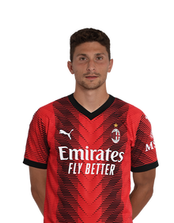

Склад клубу AC MILAN
11 стартових гравців на наступний матч(4-3-3)
Воротарь
Захист
Півзахист

Напад
Весь склад
Воротарі

[69 Lapo Francesco Maria Nava]
Захист

[2 Davide Calabria]
[2 Davide Calabria]
Півзахист
[14 Tijjani Reijnders ]

[7 Yacine Adli]